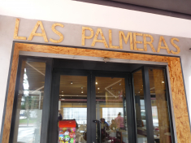

Así comenzó todo… Un 4 de agosto de 1983, Antonio Inarejos y Elia Verdejo
decidieron abrir las puertas de un pequeño restaurante, guiados por la ilusión,
el esfuerzo y muchas horas de trabajo. Antonio se situó tras la barra, ofreciendo
cercanía y sonrisas a cada cliente, mientras que Elia, sin experiencia previa,
asumió el desafío de liderar la cocina, poniendo en cada plato cariño, tradición y
dedicación. Desde sus primeros días, el restaurante se convirtió en un punto de
encuentro para vecinos, amigos y viajeros en busca de sabores auténticos y de un
trato cercano.
Con el tiempo, sus hijos crecieron entre mesas, aromas y conversaciones,
aprendiendo el valor del trabajo, la constancia y el compromiso familiar.
Tras la jubilación de Antonio y Elia, ellos continuaron el legado, manteniendo
la esencia que lo vio nacer y aportando nuevas ideas sin perder su identidad.
Décadas después, aquel pequeño proyecto sigue vivo, no solo como un restaurante,
sino como un símbolo de unión, esfuerzo y amor por la buena cocina, recordando a
cada cliente que detrás de cada plato hay una historia familiar que merece ser
celebrada.
